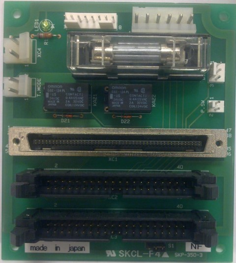
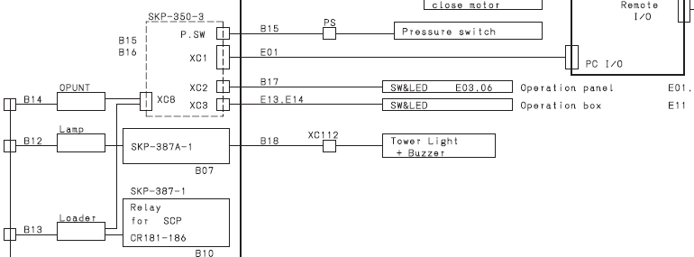

Service History
Subject: NS-7000 Fuse blown in Power Unit
Handler Model: NS-7000(Amkor)
Controller: RC520
Date: 22 Oct 2008
Symptom
Running production halfway, handler suddenly power down.
Action
1. Running production halfway, handler suddenly power down.
2. Upon restart handler/reboot harddisk few times, after control panel power on, handler MMI shows power down.
3. Circuit breaker all intact, no abnormality.
4. Measure control panel input, ok.
5. Found 1A fuse blown on SKP-350 board in power unit PSUNT.


6. Replace fuse and running check in AMBIENT and HOT. Ok
7. To monitor for repeat occurrence. MCB did not trip means possible internal circuitry problem causing fuse blown.
Cause
Fuse blown in power unit.
Remarks
When 1A fuse blown or XC4 disconnected, Front Operation panel no light, REST no light, START & HOME cannot function, COVER OPEN button cannot light up when pressed, MMI always show "Power Down".